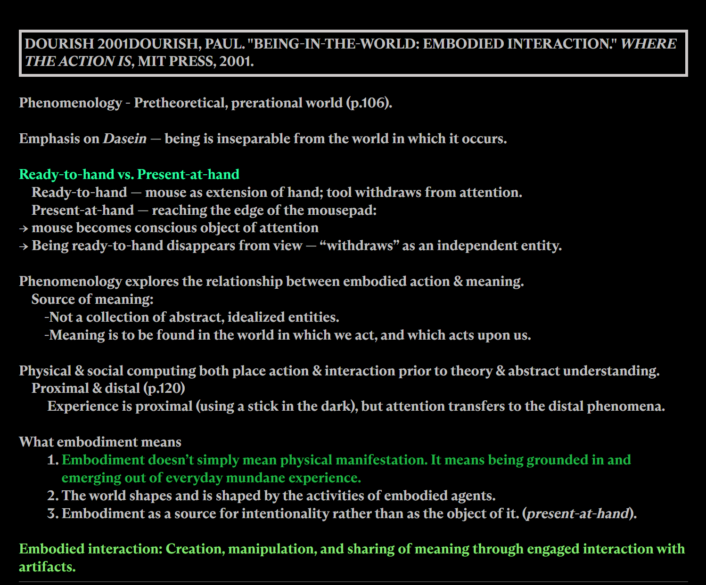
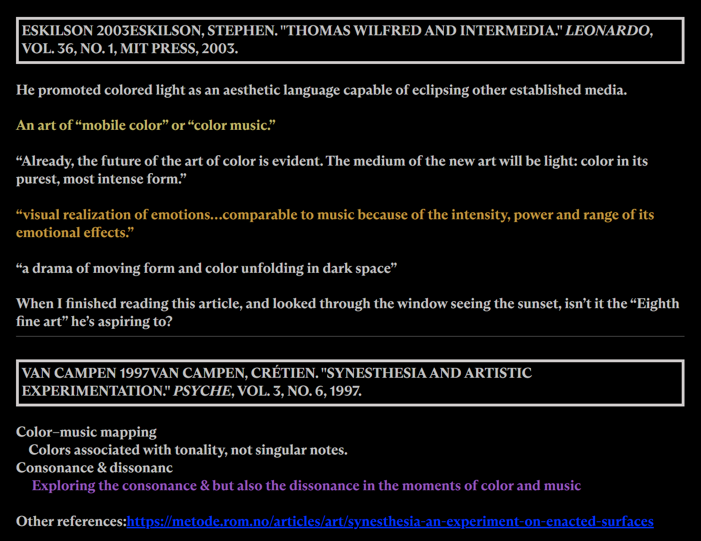
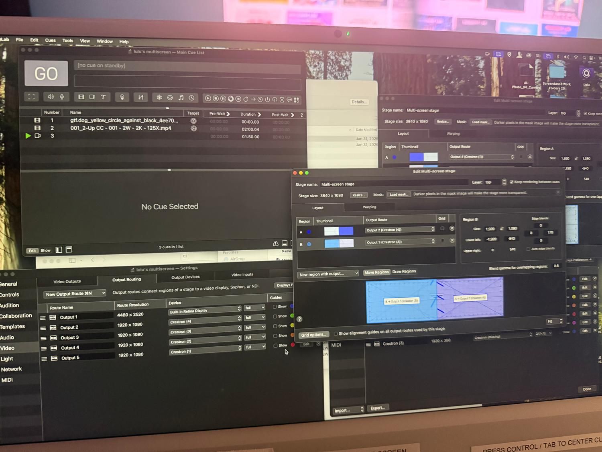

Movement Lab Student Artist in Residence
Investigating how bodily input and response timing shape participation in robotic environments.
Context
I was one of Barnard Movement Lab’s Student Artists in Residence during the 2025–26 academic year. This two-semester, process-oriented, research-driven program brings artists, technologists, musicians, and dancers together to explore intersections among movement, technology, and performance.
During the residency, I became interested in the interactive potential of the lab’s theatrical lighting system and in connecting sensors, the lighting console, and custom robotic components. I developed a series of experiments linking audience input to a custom robotic tentacle and the lab’s lighting system. These experiments allowed me to investigate interaction at two scales: the movement of an individual mechanical body and changes across the surrounding room.
Prototype: Immediate and Accumulated Responses
In the first configuration, Python-based sound detection identifies a clap and triggers the tentacle’s crawling movement. This establishes a direct relationship between an acoustic event and a visible mechanical response.
I then connected the system to the ETC Eos lighting console. Each clap changes the light color. On the thirteenth clap, the light turns red, its zoom reaches 100%, and the robotic tentacle begins to move.
The second configuration makes timing part of the encounter. Lighting registers successive actions while the robot remains still until the threshold is reached. This provides a setting for investigating anticipation, discoverability, and how people revise their actions as they encounter a system’s behavior.
For the development of the robotic mechanism, see The Roro.
Public-facing show
The research culminated in a participatory performance-installation. Audience members interact with my custom-built Tactone instrument and use touch and clapping to trigger a choreographed robotic performance with theatrical lighting.
Conceptual framework
Reading notes on embodied interaction, light as an artistic medium, and the relationship between color and sound.


Tech documentation
Selected tests and setup notes from my 2025–26 Movement Lab residency journal, connecting touch sensing, software cues, projection, and theatrical lighting.
Touch sensor, QLab, and Eos
4 March 2026
A two-laptop setup connects the ESP32 touch sensor to sound and lighting. Laptop B reads the sensor over USB serial and sends an OSC message over Wi-Fi. Laptop A receives that message, triggers a QLab cue through osascript, and sends an OSC lighting cue over Ethernet to the ETC Eos console.
Python-triggered cues
30 January–5 February 2026
These tests connect local Python input to QLab and the Eos console, including a smile-detection trigger. The networking notes record a small but important detail: the QLab OSC address needs the leading slash in /eos/cue/{cue number}/fire.
QLab and Eos networking notes →
Python cue-trigger notes →
Two-screen projection
5 February 2026
I configured a 3840 × 1080 QLab stage with two regions, using values from the lab’s existing QLab file created by Guy and shared through Mimi. The setup notes flag checking the spacing between projected images with the projector remote before the showcase.

Projection and lighting design
Fall 2025–February 2026
I explored step-based lighting effects and an inviting introductory light sequence, recorded in the journal as Effect 1050 on 19 February. These studies test how light can draw an audience into the space and how touch can change the lighting.
Re-adapting in Prentis Art Show
A designated sequence played on the ceramic instrument triggers movement in the robotic mechanism.
Current Outcome and Further Inquiry
The project establishes working configurations connecting bodily input, robotic actuation, and theatrical lighting. Further investigation could examine how participants discover the mappings, attribute changes to their actions, and coordinate with others.
The central inquiry is how a responsive environment makes participation understandable: what people can influence, how that influence becomes visible, and how the encounter changes as they learn.